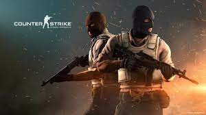

Counter-Strike: Global Offensive (CS:GO) rozwija drużynową rozgrywkę akcji, którą ta seria zapoczątkowała po swojej premierze ponad 20 lat temu.
„Counter-Strike zaskoczyło branżę gier, gdy nie sprawiająca pozorów MODYFIKACJA stała się najczęściej rozgrywaną komputerową grą akcji online na całym świecie niemal natychmiastowo po jej wydaniu w sierpniu 1999 r.” – powiedział Doug Lombardi z Valve.
Wiecej informacji na stronie wydawcy gry

Strona Główna